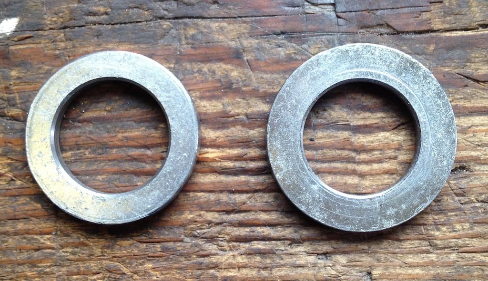
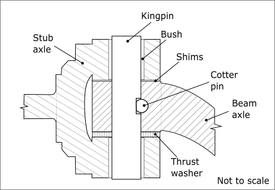
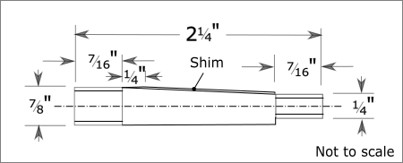
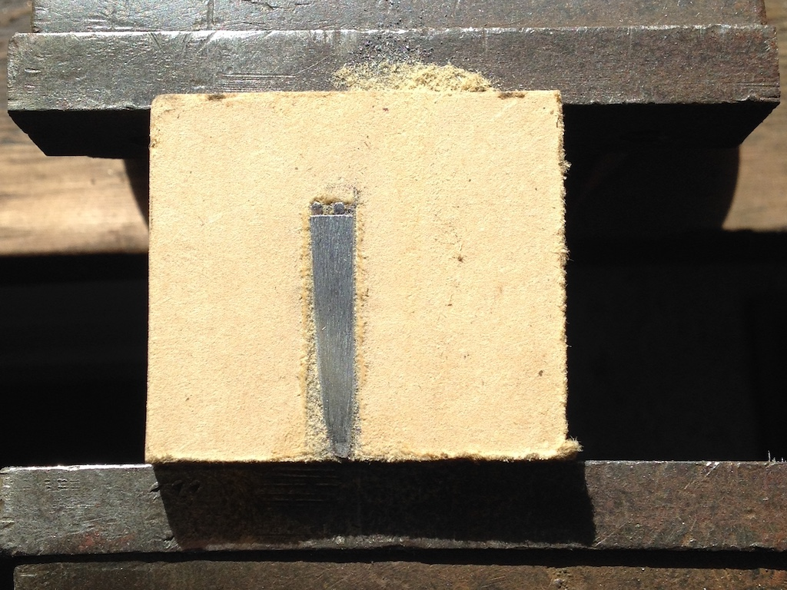
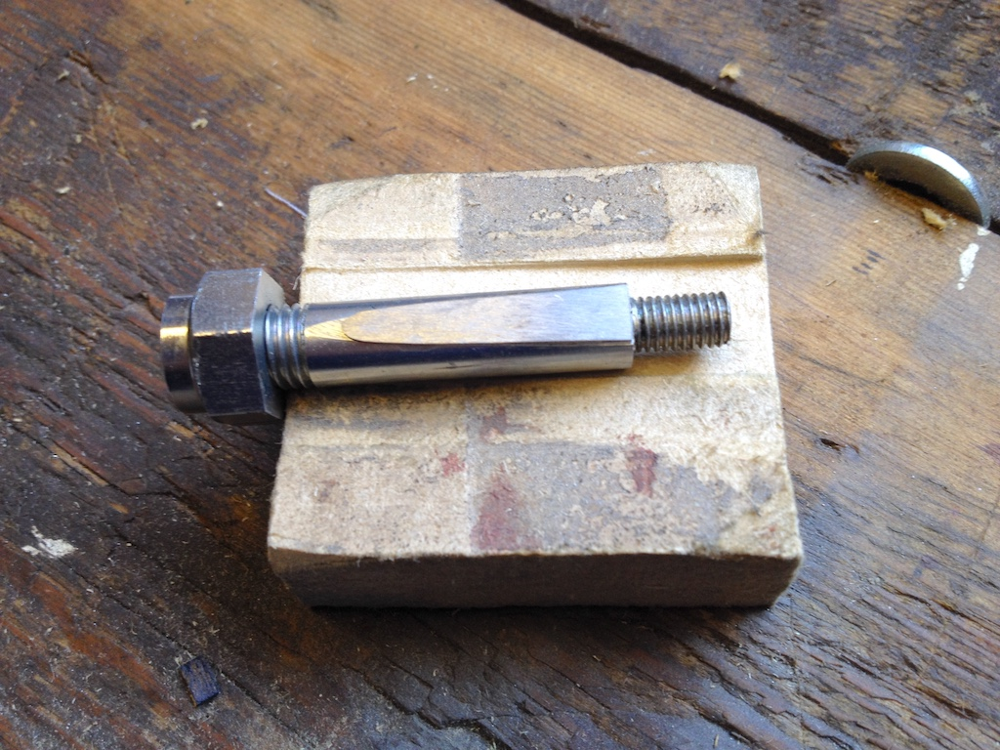
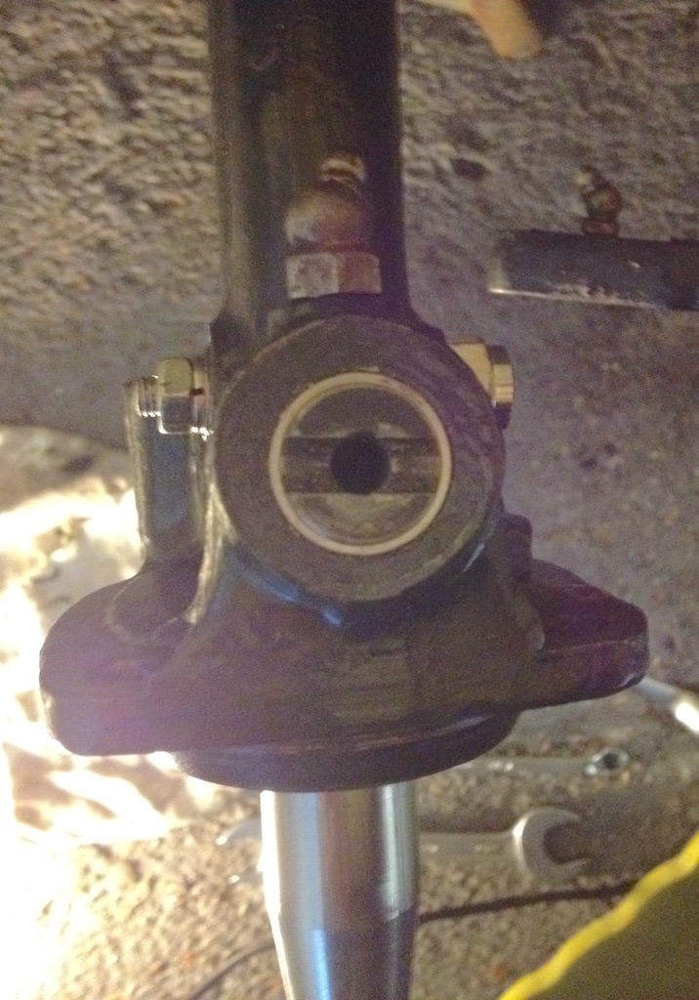
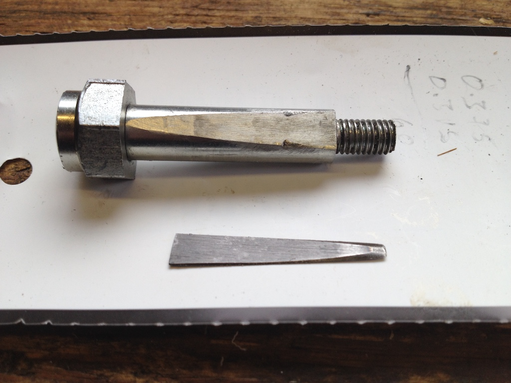

Kingpin Replacement
When I refitted the stub axles in July 2016, having had the spindles on the stub axles replaced, I found that the cotter pin on the near-side went too far through the hole in the axle. Since the bushes were slightly longer on one side compared to the other, I assumed that the kingpins were not a pair. So, although I could not feel any wear in the bushes, I had planned to replace the kingpins and bushes at some convenient time. I had bought steel-backed bushes from Eric Worpe in December 2019 and decided that after the South Downs Run in September 2021 was a good time to tackle the kingpins. Peter Cole in Bognor Regis had offered to help me fit the bushes and ream them for the new kingpins, so I bought kingpins and cotter pins from Roger Furneaux and in mid September set about the task. Roger thinks the kingpins, although new old stock, are Morris kingpins, since they have grease holes in them and a larger nut on the top, presumably for a grease nipple.
 As you can see from the photo, I removed the hubs and the stub axles so that I could take the latter to Peter. My hub puller isn't quite long enough to get the claws behind the hub, so I put large washers behind three drum studs and, with an elastic band pulling the claws together, I can get the claws behind the washers and pull off the hub.
As you can see from the photo, I removed the hubs and the stub axles so that I could take the latter to Peter. My hub puller isn't quite long enough to get the claws behind the hub, so I put large washers behind three drum studs and, with an elastic band pulling the claws together, I can get the claws behind the washers and pull off the hub.
I took the stub axles and new parts over to Bognor and Peter and I spent the morning removing the old bushes, pressing in the new ones (which took more effort than I had expected) and then reaming them. Luckily Peter had a large press and fitted a ¾" reamer in the chuck of his lathe, with a piece in the stock to hold the stub axle straight. We found, however, that the new kingpins were about three thou oversize. Luckily Peter had an adjustable reamer and so we were able to make the new kingpins fit.
The new kingpins were a 'snug' fit in the axle eyes, although they could be tapped in with a rubber hammer. Fitting the offside stub axle and hub was straight forward. I tapped the hub on to the spindle and then used the castle nut to push it all the way on. When I removed the hubs I had found that the spacers that I'd put on the outside of the dished washers were a little too large. On the near-side it had partially flattened the dished washer. So I filed the edge so as to reduce the diameter to that of the castle nut that is actually in contact with it. In the photo, the reduced washer/spacer is on the left. It had previously been the width of the nut across corners. The off-side spindle has a right-hand thread, so I was able to set my torque wrench to 120 ft.bls.f and really lean on it to tighten the nut. Luckily it only needed a further small movement to bring the splitpin hole in line.
The near-side was a different matter. I found that the cotter pin still went too far through the hole in the axle! In fact, I needed to wind back the big nut on the cotter pin five turns in order to make it engage with the kingpin. The only conclusion that I can come to is that the kingpin hole and the cotter pin hole are slightly too far apart. Neither seem to be worn, so it must have been made that way. Perhaps MG had a series of cotter pins with different flats cut into them to allow for slight variations.
My solution was to make a shim to go between the cotter pin and the slot in the kingpin. I cut a piece from a bolt of the same diameter as the cotter pin and then made a couple of jigs to help file it to size.
One of these jigs is shown here, with two pins towards the top to stop the shim from moving. Another jig held the piece of bolt so that I could draw it along a file fixed to the bench.
The shim ended up being only 20 thou thick at the thicker end. You can just see it lying on the flat of the cotter pin with the big nut partially on. This allowed the cotter pin to be held against the slot in the kingpin without going too far through. On both sides, since the shoulder on the cotter pin was very close to the exit of the hole in the axle, I added a washer that would slide over the cotter pin to the small nut end. I could then tap the cotter pin in and tighten the nut without fear of the spring washer simply tightening against the shoulder.
In the photo, taken from above the kingpin, you can just see the big nut on the cotter pin to the rear, which acts as the steering stop, and the small nut at the front that tightens the cotter pin in the axle. After a 17 mile test run I checked the tightness of the all the nuts (and found that the near-side damper was very loose), including the cotter pins. A few days later, after a Sussex Wanderers run totalling 63 miles, I checked the cotter pins again. The near-side cotter pin is still going too far through the hole in the axle, so I might need to make a slightly larger shim.
In fact I did. I removed the near-side cotter pin and found that the shim showed no sign of damage. Then I cut another slice from the bolt and filed down the base so that it completed the round cotter pin and then filed the other side so as to produce a relatively uniform 25 thou shim. I had to reduce that further, but whereas the first shim was 20 thou at the thick end and only a few thou at the other end, my new shim was a fairly uniform 15 thou. I pulled it into the axle with the small nut and a washer to prevent the shim from moving, and then gave is few strong taps with a hammer before tightening it.
© David James 2021 Last updated: 19th October 2021